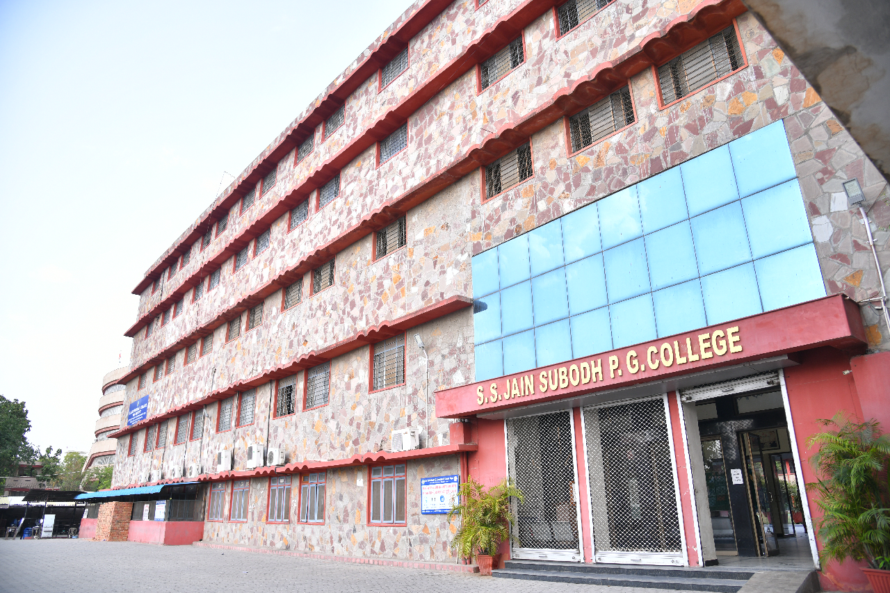
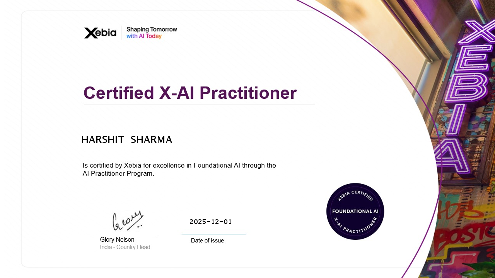
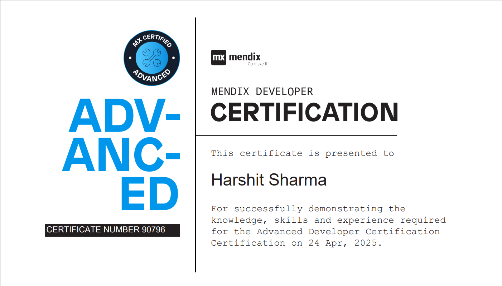
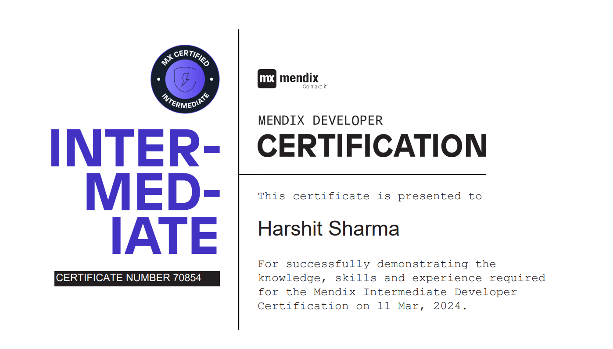
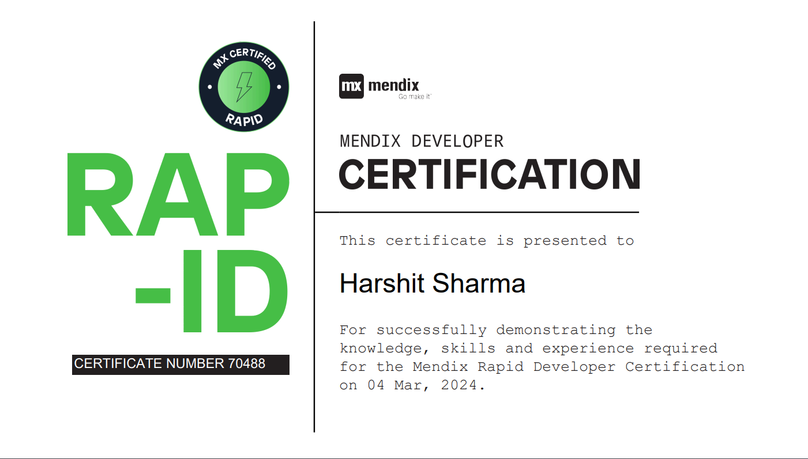
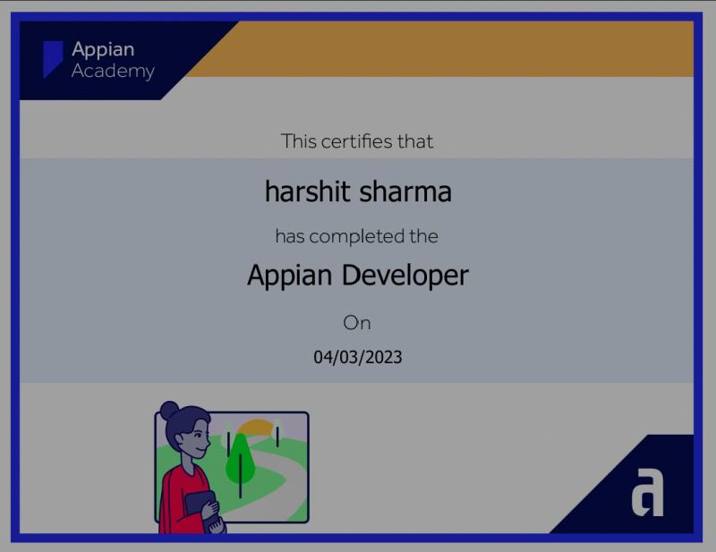

HARSHIT SHARMA
DESIGNER / DEVELOPER
PROJECTS COMPLETED
0
TOTAL EXPERIENCE
CONSULTANT AT XEBIA
MENDIX ADVANCED CERTIFIED
GRADUATION COURSE
B.C.A
POST GRADUATION COURSE
M.C.A
EDUCATIONAL DETAILS
WELCOME TO MY EDUCATION SECTION
SS Jain Subodh PG College, Rambagh, Jaipur
Master of Computer Applications (MCA)
Year of Completion: 2025
I completed my Master of Computer Applications (MCA) from SS Jain Subodh PG College, Rambagh, Jaipur. During this program, I explored advanced concepts of computer science, software engineering, and application development, which helped me strengthen my technical expertise and problem-solving skills.

SS Jain Subodh PG College, Rambagh, Jaipur
Bachelor of Computer Applications (BCA)
Year of Completion: 2023
Percentage: 80.40%
I pursued my Bachelor of Computer Applications (BCA) from SS Jain Subodh PG College, Rambagh, Jaipur. This course provided me with a strong foundation in programming languages, database management, and web technologies, shaping my interest in building innovative software solutions.
CENTRAL ACADEMY, AMBABARI, JAIPUR, RAJASTHAN
Stream: Commerce with Informatics Practices (IP)
Year of Completion: 2020
Percentage: 76.6%
I completed my Senior Secondary education (Class 12) from Central Academy, Ambabari, Jaipur, with Commerce and Informatics Practices (IP) as my chosen stream. Securing 76.6%, this phase of my education allowed me to balance both business and technology subjects, laying the groundwork for my future studies in computer applications.
CERTIFICATIONS :
WELCOME TO MY CERTIFICATE SECTION

1. X-AI Practitioner Certificate
I earned the Certified X-AI Practitioner certification from Xebia, recognizing my foundational expertise in modern AI concepts and practical implementation. This certification validates my ability to understand, build, and apply AI-driven solutions using industry-standard methods. It reflects my commitment to continuous learning and staying ahead in the rapidly evolving field of Artificial Intelligence.

2. Mendix Advanced Certificate
Cleared the Mendix Advanced Developer Certification, showcasing expertise in building complex enterprise applications with advanced logic, integrations, and performance optimization.!

3. Mendix Intermediate Certificate
Earned the Mendix Intermediate Developer Certification, validating strong skills in domain modeling, microflows, UI customization, and external system integrations.

4. Mendix Rapid Developer Certificate
Achieved the Mendix Rapid Developer Certification, demonstrating knowledge of Mendix fundamentals such as domain models, pages, and microflows for quick application development.

5. Udemy - Deep Dive in C++ (Abdul Bari)
Completed the Deep Dive in C++ course by Abdul Bari on Udemy, strengthening my understanding of object-oriented programming, advanced C++ concepts, and efficient coding practices.

6. Coding Mafia - DSA Certificate
Achieved the Data Structures and Algorithms Certificate from Coding Mafia, validating my problem-solving skills and knowledge of core DSA concepts such as arrays, linked lists, stacks, queues, trees, and graphs.

7. Appian Developer Certificate
Earned the Appian Developer Certificate after completing the official Appian training program, gaining skills in low-code development, process automation, and application design.
CERTIFICATIONS :
WELCOME TO MY CERTIFICATE SECTION
1. X-AI Practitioner Certificate
I earned the Certified X-AI Practitioner certification from Xebia, recognizing my foundational expertise in modern AI concepts and practical implementation. This certification validates my ability to understand, build, and apply AI-driven solutions using industry-standard methods. It reflects my commitment to continuous learning and staying ahead in the rapidly evolving field of Artificial Intelligence.
2. Mendix Advanced Certificate
Cleared the Mendix Advanced Developer Certification, showcasing expertise in building complex enterprise applications with advanced logic, integrations, and performance optimization.!
3. Mendix Intermediate Certificate
Earned the Mendix Intermediate Developer Certification, validating strong skills in domain modeling, microflows, UI customization, and external system integrations.
4. Mendix Rapid Developer Certificate
Achieved the Mendix Rapid Developer Certification, demonstrating knowledge of Mendix fundamentals such as domain models, pages, and microflows for quick application development.
5. Udemy - Deep Dive in C++ (Abdul Bari)
Completed the Deep Dive in C++ course by Abdul Bari on Udemy, strengthening my understanding of object-oriented programming, advanced C++ concepts, and efficient coding practices.
6. Coding Mafia - DSA Certificate
Achieved the Data Structures and Algorithms Certificate from Coding Mafia, validating my problem-solving skills and knowledge of core DSA concepts such as arrays, linked lists, stacks, queues, trees, and graphs.
7. Appian Developer Certificate
Earned the Appian Developer Certificate after completing the official Appian training program, gaining skills in low-code development, process automation, and application design.